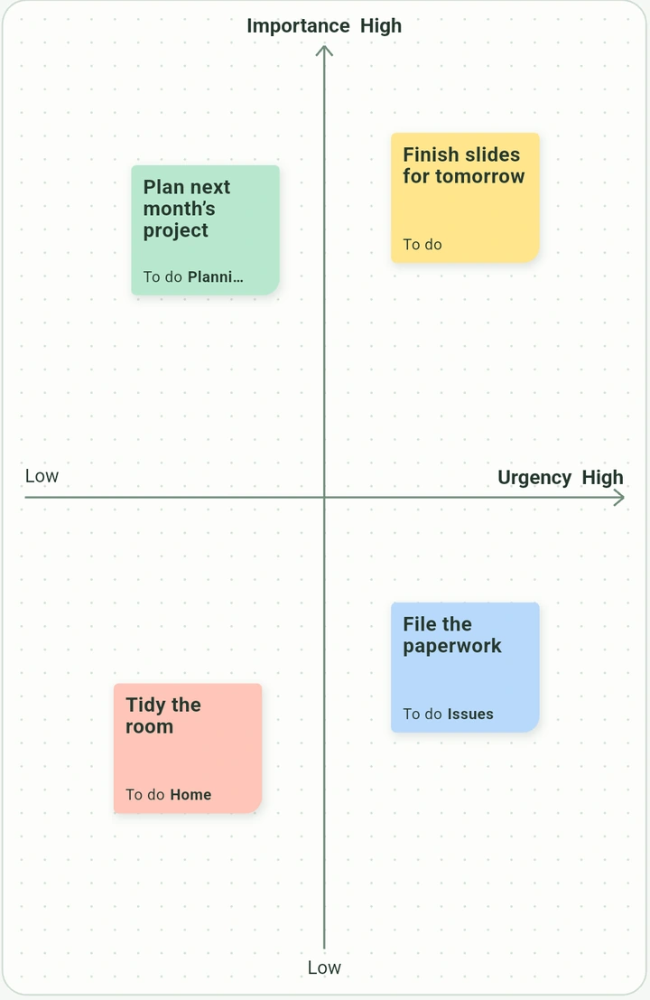
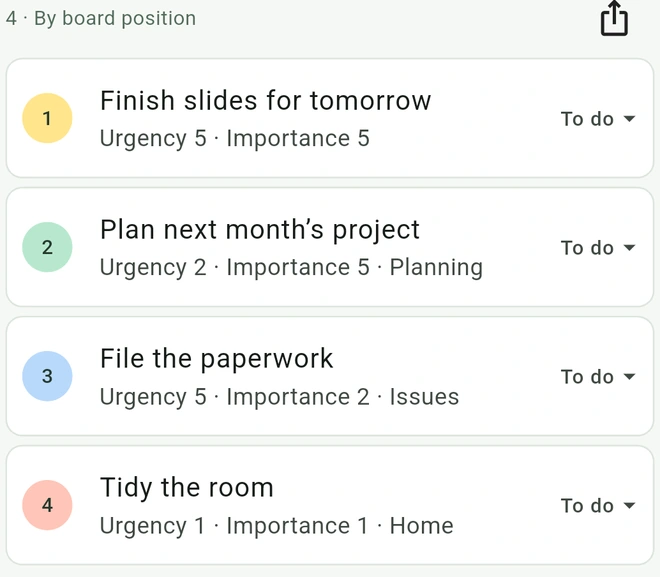

So much to do.
Where to start?
Give urgent errands and important work their own sticky notes. Place them on the board by urgency and importance, and PetaTodo puts them in order automatically.

Free to use. No account required.

Use sticky notes to decide what to do next
-
Write down what needs doing
Give each task its own sticky note, like “Finish slides for tomorrow.”
-
Move urgent tasks right and important tasks up
Tomorrow’s slides might go in the upper right. An important project for next month can go in the upper left. Compare your notes as you place them.
-
Start at the top of your list
Open To-do to see tasks ranked by their position on the board. Mark them In progress or Done as you work through the list.

When plans change, move a note
Say a presentation gets moved up to tomorrow. Drag “Finish slides” to the right on the board, and it moves ahead of the quote in your to-do list. The list updates automatically using the same notes.
Before
- Send quote
- Finish slides
After the move
- Finish slides
- Send quote
For work, home, and study
-
Work
Compare a presentation deadline with a project you want to get ahead on.
-
Home
See a form due today alongside the weekend grocery run.
-
Study
Plan tomorrow’s assignment and the exam prep you want to make time for.
Frequently asked questions
Is PetaTodo free?
PetaTodo is free on iPhone, iPad, and Android. You can start without an account. The app may display ads.
How does PetaTodo rank tasks?
A note’s position gives it an urgency score and an importance score, each from 1 to 5. Higher totals come first. If there’s a tie, the more important task comes first, followed by the one created earlier if both importance scores match.
What happens when I complete a task?
Marking it Done clears it from the board and keeps it in the Done section of your to-do list. Switching it back to To do or In progress returns it to its previous spot.
How do I organize a crowded board?
Make the board bigger and keep the notes the same size. Use colors to tell them apart and labels to filter them. A note can also hold formatted text and multiple attachments.
Can I share my board or to-do list?
Save or share the board as PDF or PNG, or the to-do list as CSV, PDF, or PNG. You can also copy the to-do list as text, CSV, or an image.
Where are my notes and attachments stored?
PetaTodo stores your board, notes, and attachments on your device and never uploads this content to its servers.